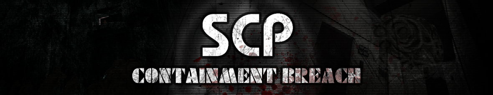

Zalecane gierki w moim wydaniu :3
#1. Cry of Fear

"Cry of Fear" to psychologiczny horror stworzony przez małe studio ze Szwecji, w którym główny bohater, Simon Henriksson, zmaga się ze swoimi koszmarami w opuszczonym szwedzkim mieście. Prześladują go one od dnia wypadku [nie będę spoilerować ;)].
Podczas eksploracji tej wspaniałej gry doświadczyłem wielu emocji, w tym niepokojącego strachu, lęku, pięciokrotnej wymiany bielizny oraz chęci nawrócenia się na chrześcijaństwo. Gra ta jednak skrywa piękną i głęboką fabułę, która na pierwszy rzut oka może wydawać się jedynie jako "potwory są złe, więc je zabijasz xd", lecz po bliższym poznaniu sytuacji, w jakiej znalazł się Simon, z jego trudnym życiem, zdarzeniami, które go spotkały, nieszczęśliwymi przeżyciami oraz tragedią, która stanowi punkt kulminacyjny fabuły, śmiało mogę stwierdzić, że "Cry of Fear" jest jedną z lepszych gier z gatunku Indie Horror i powinna być znana wszystkim miłośnikom tego stylu gry.
Jednym z najlepszych elementów tej gry jednak są wszelkiego rodzaju stroje, które można odblokować. Moim ulubionym jest strój Hello Kitty bo jest taki superaśnie UwU i >~<:
#2. Cruelty Squad

"Cruelty Squad" to gra z otwartym światem, w której wcielamy się w płatnego zabójcę. Główna postać, pozostawiona bez imienia, znajduje się w świecie, który można opisać jedynie jako "jakbyś wpierdolił kilo grzybków halucygenowych albo kwasu". Świat "Cruelty Squad" charakteryzuje się bardzo nietypowym stylem, często sprawiając wrażenie, że wejście w niego to podróż po psychodelicznym tripie.
Podczas eksploracji tej zaskakującej, ale jednocześnie uzależniającej gry, bardzo przypadł mi do gustu jej nietypowy styl. Czy to groteskowe tekstury, naturalistyczne przedstawienia postaci, a nawet czasami przerażające, bądź wprowadzające w płacz geometryczne ułożenie poziomów - wszystko jest zjebane, że japierdole. Fabularnie gra jest bardzo złożona, wiele wątków pozostaje do własnej interpretacji, ale ogólnie chodzi o to, że duże korporacje są "fuj", a zwykli ludzie są przez nie bezlitośnie wykorzystywani, i twoim celem jest obalenie ich!. Zagranie w tą grę wywoła w twoim mózgu przestawienie niektórych eletronów w taki sposób, że synapsa między komórkami nerwowymi dostaje tak zwanego "pierdolca" i pomino tego, że patrzysz się na grę która przypomina rzygi, cieszysz się jak pojebany (nie wiem czemu ale tak właśnie jest).
Opisawszy nietypowy styl tej gry, chciałbym przedstawić moją ulubioną teksturę:
Jaki zajebisty, uśmiechnięty kloc XDD
#3. Osu!

Nie ma zbyt wiele do opowiedzenia. Ta gra oficjalnie potwierdza zdolność wywoływania fobii kółek. Pytasz, dlaczego? Otóż, po klikaniu w te ruchome chuje przez osiem godzin, ludzki umysł przechodzi proces przemiany à la George Floyd (jak w Trollach) i wywołuje miniaturową wersję paraliżu kory mózgowej. Innymi słowy, stajesz się debilem genetycznym.
Podczas rozgrywki w tę jebaną grę, muszę przyznać, że teraz też z dumą nazywam się członkiem elitarnej grupy debili genetycznych. Gra ta nie oferuje żadnej frajdy, przyjemności, wydzielanej dopaminy ani ekstazy. Zamiast tego dostarcza niesamowitą dawkę bólu, cierpienia i melancholii do mojego życia. Dlatego wyjebałem w nią około 500 godzin :D.
Pomijając niesamowity ból, cierpienie i kryzys egzystencjalny przez tą zajebaną grę, chcę jedynie dodać jaka zajebista jest ta morda w dolnym prawym rogu:
#4. Postal 2
Mogę śmiało stwierdzić, że ta gra była, jest i będzie w moim sercu aż po grób. Ta niezwykle zabawna, dziwna i brutalna gra jest stworzona dla tych, którzy kochają czarny humor. Jest on tak czarny, że nawet sama Konwencja Genewska zakazała sprzedaży tej gry w niektórych państwach. W "Postal 2" wcielamy się w jednego z najbardziej spektakularnych postaci fikcyjnych w dziejach ludzkości, Postal Dude'a. Postal Dude to przeciętny mieszkaniec małego, amerykańskiego miasteczka wypełnionym po brzegi nietypową ludnością, przezabawną jak i przerażającą refleksją probelmów o rzeczywistym świecie, które gra porusza w sposób bardzo abstrakcyjny, śmieszny i czasami nawet przektlęty.
W tę grę się nie gra, ją się przeżywa. Ta gra jest starsza ode mnie (wydana w 2003 roku), a ja w nią napierdalam od małego jak Guziec papierosy. Jest to prawdziwy festiwal groteski i żartów, które potrafią przekształcić nawet największego fana My Little Pony w entuzjastę Mein Kampf. Nie będę się rozwodził, ale powiem jedynie, że w tej grze można kogoś zatłuc młotem pneumatycznym, odciąć kończyny łopatą, obszczać zwłoki, spalić je, zapalić crack i rzucić żart o Żydach (wszystko jednocześnie). Można również założyć żywego kota jako tłumik na broń :3. Po prostu kocham to!
Jeżeli ta gra już nie wydaję sie być według ciebie wystarczająco zajebista chciałbym dodać, że w niej teroiścy mają model na wzór Osama Bin Laden'a:

#5. SCP Containment Beach
Ta gra to adaptacja fikcyjnego świata SCP. Podobnie jak w przypadku samego fanowskiego świata SCP, jest równie niesamowita, fascynująca, a jednocześnie potrafi momentalnie przerażać i wprowadzać człowieka w stan darmowej lewatywy.
Po wielu przejściach tej gry mogę śmiało powiedzieć, że to świetna gierka na luźne pyknięcie od czasu do czasu, gdy masz ochotę na trochę zabawy. Jednak podczas pierwszego podejścia to było prawdziwe doświadczenie paranormalne. Pomijając strach i grozę, które pojawiały się, gdyż w każdej cwhili jakiś gówniarz mógł ci wyskoczyć zza rogu i rozjebać cię jak Trolle chęć do życia, przerażająca była również atmosfera tej gry. Ciemne, ciasne pomieszczenia, częste dźwięki katowanych osób w innych częściach placówki, zmasakrowane zwłoki nieszczęśników, oraz dźwięki mechanizmów i innych elementów otoczenia, powodujące gęsią skórkę - to wszystko tworzy niesamowicie intrygującą, ale i brutalną rozgrywkę dla początkujących. Gra ta jest niemal idealna, jeśli chcesz pogłębić swoją wiedzę o świecie SCP i doświadczyć jego najstraszniejszych (i najbardziej zajebistych) elementów we własnej osobie.
Pomijając niebywale starszne oblicza tej gry, chciałbym podkreślić fakt, że jednym z częstrzych SCP, które występują to dosłownie fistaszek xd:
Kurwa dałem nie to u w zdjęciu ale już chuj nie chce mi się zmieniać xd